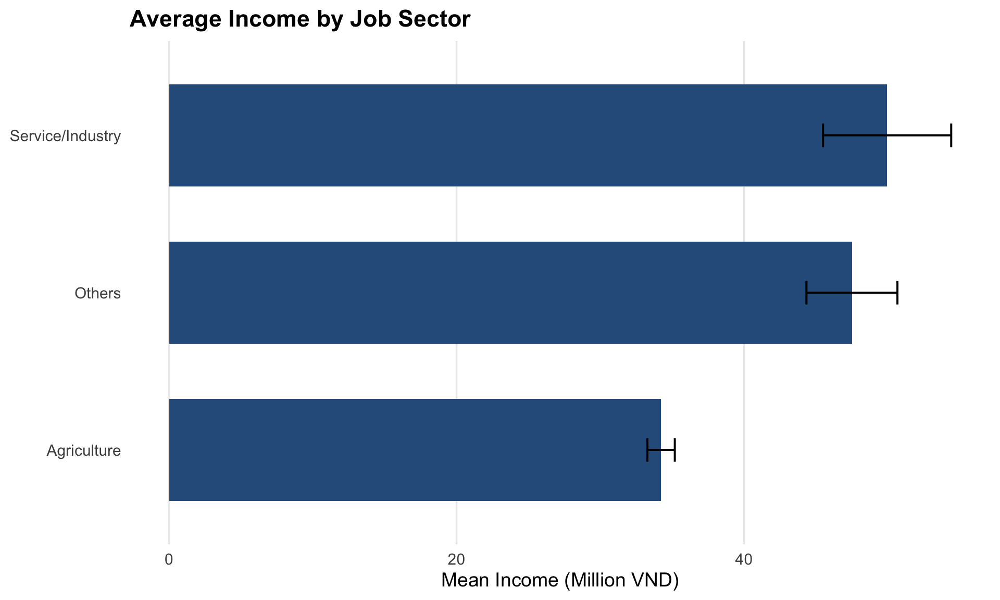

Show code
pacman::p_load(tidyverse, ggthemes, patchwork, knitr, ggridges, ggtext, readxl)This report analyses income patterns among informal labourers in Vietnam’s Northern Mountainous Region using a survey dataset of 725 rural workers. The objective is to examine how income is distributed within this population and to identify observable differences across key socio-economic characteristics.
Rather than relying solely on summary statistics, the analysis employs visualisation techniques to explore how factors such as education, gender, and ethnicity are associated with variations in income. By comparing income distributions across these groups, the report aims to highlight patterns that may reflect differences in economic opportunity and earning potential within rural informal employment.
This analysis is conducted using the tidyverse framework for data manipulation and ggplot2-based extensions for visualisation. Additional packages are included to support formatting and layout.
pacman::p_load(tidyverse, ggthemes, patchwork, knitr, ggridges, ggtext, readxl)The dataset originates from a survey of informal labourers in rural northern Vietnam and is associated with the study by Mai et al. (2021). I have attained this data as per the research paper’s requirement.
The data is publicly accessible through Mendeley Data Mendeley Data.
# Load the dataset
raw_data <- read_excel("data/Upload for elsiver.xlsx")
glimpse(raw_data)Rows: 725
Columns: 30
$ CPRO <dbl> 1, 1, 1, 1, 1, 1, 1, 1, 1, 1, 1, 1, 1, 1, 1, 1, 1, 1, 1, 1, 1, 1,…
$ CGEN <chr> "1", "1", "2", "1", "2", "2", "1", "1", "1", "1", "1", "2", "2", …
$ CRAC <dbl> 2, 2, 2, 2, 2, 2, 2, 2, 2, 2, 2, 1, 1, 2, 2, 2, 1, 1, 1, 1, 1, 1,…
$ CJOB <dbl> 1, 1, 3, 1, 1, NA, 3, 1, 3, 1, 1, 1, 2, 1, NA, 2, 1, 1, 1, 1, 1, …
$ CQUI <dbl> 3, 5, 3, 3, 3, 4, 1, 3, 3, 3, 3, 3, 2, 3, 5, 1, 2, 2, 2, 2, 2, 2,…
$ TEIN <dbl> 37, 25, 33, 35, 36, 21, 35, 36, 38, 30, 58, 24, 32, 11, 22, 95, 4…
$ TAIN <dbl> 25, 22, 25, 30, 28, 17, 25, 28, 26, 22, 40, 24, 23, 11, 20, 30, 3…
$ TSII <dbl> 7, 0, 0, 5, 0, 0, 0, 0, 12, 2, 0, 0, 0, 0, 0, 50, 17, 10, 12, 15,…
$ TOIN <dbl> 5, 3, 8, 0, 8, 4, 10, 8, 0, 6, 18, 0, 9, 0, 2, 15, 0, 0, 0, 0, 16…
$ FEDU <dbl> 1, 0, 1, 1, 0, 0, 3, 0, 2, 0, 0, 0, 0, 0, 0, 2, 1, 2, 2, 2, 2, 2,…
$ FVTP <dbl> 1, 1, 1, 1, 1, 1, 2, 1, 2, 1, 1, 1, 1, 1, 1, 2, 1, 2, 2, 2, 2, 2,…
$ FCRA <dbl> 1, 2, 1, 1, 1, 1, 1, 1, 1, 1, 1, 1, 1, 1, 1, 1, 1, 1, 1, 1, 1, 1,…
$ FTAP <dbl> 1, 1, 2, NA, 2, 2, 2, 2, 2, 2, 2, NA, NA, 2, NA, 2, NA, 2, NA, NA…
$ LHO1 <dbl> NA, 1, NA, 1, NA, NA, NA, NA, NA, NA, NA, NA, NA, NA, 1, NA, NA, …
$ LHO2 <dbl> 1, NA, NA, NA, 1, 1, NA, 1, 1, 1, 1, 1, NA, 1, NA, NA, NA, NA, NA…
$ LHO3 <dbl> NA, NA, NA, NA, NA, NA, 1, NA, NA, NA, NA, NA, 1, NA, NA, 1, 1, 1…
$ LHO4 <dbl> NA, NA, 1, NA, NA, NA, NA, NA, NA, NA, NA, NA, NA, NA, NA, NA, NA…
$ LCRE <dbl> NA, 15, NA, NA, NA, NA, NA, NA, NA, NA, NA, NA, NA, NA, NA, NA, N…
$ LSAV <dbl> 5, NA, 30, NA, NA, 2, 70, NA, 25, 10, 15, NA, NA, 16, NA, 20, NA,…
$ LWDA <dbl> 240, 350, 260, 300, 360, 360, 260, 260, 300, 300, 270, NA, NA, 20…
$ PPO1 <dbl> 5, 2, 5, NA, 5, 2, 5, 5, 4, 5, 4, NA, NA, NA, NA, NA, NA, NA, NA,…
$ PPO2 <dbl> 2, 5, 5, NA, 5, 4, 2, 2, 3, 1, 1, NA, NA, NA, NA, NA, NA, NA, NA,…
$ PPO3 <dbl> 3, 3, 1, NA, 1, 3, 3, 3, 3, 3, 3, NA, NA, 1, NA, 1, NA, 1, NA, 1,…
$ PPO4 <dbl> 1, 1, 1, NA, 1, 1, 2, 2, 2, 2, 2, NA, NA, 3, NA, NA, NA, NA, NA, …
$ PPO5 <dbl> 3, 1, 1, NA, 1, 1, 3, 3, 3, 3, 3, NA, NA, 1, NA, NA, NA, NA, NA, …
$ ARO1 <dbl> 3, 1, 1, NA, 1, 1, 2, 2, 2, 2, 2, NA, NA, NA, NA, NA, NA, NA, NA,…
$ ARO2 <dbl> 1, 1, 1, NA, 1, 1, 1, 1, 1, 2, 1, NA, NA, 2, NA, NA, NA, NA, NA, …
$ ARO3 <dbl> 1, 1, 1, NA, 1, 1, 3, 3, 2, 3, 3, NA, NA, 1, NA, 1, NA, NA, NA, 1…
$ ARO4 <chr> "3", "3", NA, NA, "2", "2", "3", "3", "3", "3", "3", NA, NA, "3",…
$ ARO5 <dbl> 1, 1, 1, NA, 1, 1, 3, 3, 3, 3, 3, NA, NA, 1, NA, NA, NA, NA, NA, …Before proceeding to the analytical section, the dataset was cleaned and recoded to ensure interpretability and analytical consistency.
Categorical variables in the raw dataset are encoded numerically. These were converted into labelled factor variables to improve clarity in analysis and visualisation. Education and income quintile were treated as ordered factors to preserve their natural ranking.
clean_data <- raw_data %>%
mutate(
Province = factor(CPRO,
levels = 1:5,
labels = c("Tuyen Quang", "Quang Ninh",
"Ha Giang", "Yen Bai", "Bac Giang")),
Gender = factor(CGEN,
levels = c(1, 2),
labels = c("Male", "Female")),
Ethnicity = factor(CRAC,
levels = c(1, 2),
labels = c("Kinh", "Minorities")),
Job_Type = factor(CJOB,
levels = c(1, 2, 3),
labels = c("Agriculture", "Service/Industry", "Others")),
Education = factor(FEDU,
levels = c(0, 1, 2, 3),
labels = c("None/Other", "Primary",
"Lower Secondary", "Upper Secondary"),
ordered = TRUE),
Quintile = factor(CQUI,
levels = c(5, 4, 3, 2, 1),
labels = c("Lowest", "Second", "Middle", "Fourth", "Top"),
ordered = TRUE),
Credit = factor(FCRA,
levels = c(1, 2),
labels = c("No Credit", "Has Credit")),
Vocational = factor(FVTP,
levels = c(1, 2),
labels = c("Short Course", "Long Course")),
Income = as.numeric(TEIN),
Agri_Income = as.numeric(TAIN),
Service_Income = as.numeric(TSII),
Other_Income = as.numeric(TOIN)
)Records with incomplete values in key analytical variables were removed to maintain consistency across comparisons.
clean_data <- clean_data %>%
drop_na(Income, Gender, Ethnicity, Job_Type, Province)To ensure meaningful interpretation of income-related results, only respondents with strictly positive income values were retained. Non-positive values may indicate reporting errors or non-earning individuals.
clean_data <- clean_data %>%
filter(Income > 0)Duplicate observations were excluded to ensure each respondent contributes only once to the analysis.
clean_data <- clean_data %>%
distinct()The final cleaned dataset serves as the foundation for subsequent visual exploration.
clean_data %>%
summarise(
Respondents = n(),
Mean_Income = mean(Income),
Median_Income = median(Income),
Female_Share = mean(Gender == "Female") * 100
)# A tibble: 1 × 4
Respondents Mean_Income Median_Income Female_Share
<int> <dbl> <dbl> <dbl>
1 673 37.6 32 17.4This section examines income variation across demographic and socio-economic dimensions. The objective is to identify observable differences in income distribution by province, gender, education, ethnicity, occupation, wealth composition, and access to credit. All findings reflect descriptive associations rather than causal inference.
# Global plotting style (apply to all figures in Section 3)
theme_set(
theme_minimal(base_size = 14) +
theme(
plot.title = element_text(face = "bold"),
panel.grid.minor = element_blank(),
legend.position = "top"
)
)
# Consistent colour choices (Blue–Grey academic theme)
COL_BLUE <- "#1f4e79"
COL_BLUE2 <- "#2c5d8a"
COL_GREY <- "grey70"
COL_GREY2 <- "grey60"To compare provincial income patterns, a ridgeline density plot is used. Provinces are ordered by median income to facilitate ranking comparison.
clean_data %>%
mutate(Province = reorder(Province, Income, median)) %>%
ggplot(aes(x = Income, y = Province, fill = Province)) +
geom_density_ridges(alpha = 0.8, color = "grey95", scale = 1.1) +
scale_fill_brewer(palette = "Blues") +
labs(
title = "Income Distribution by Province",
x = "Income (Million VND)",
y = NULL
) +
theme(legend.position = "none")
Observation: From the ridgeline plot, median income levels across provinces look relatively similar. However, the shapes of the distributions are not the same. Bac Giang appears to have a longer right tail, indicating the presence of higher-income individuals. In contrast, Yen Bai shows a more concentrated distribution at lower income levels, with fewer high earners. The other provinces fall somewhere in between. This suggests that provincial differences are reflected more in income dispersion and the presence of high-income outliers rather than large gaps in median income.
Income differences by gender are examined alongside occupational composition to explore potential structural factors.
p_gender_income <- ggplot(clean_data, aes(x = Income, fill = Gender)) +
geom_density(alpha = 0.5) +
scale_fill_manual(values = c("Male" = COL_BLUE, "Female" = COL_GREY2)) +
labs(
title = "Income Distribution by Gender",
x = "Income (Million VND)",
y = "Density"
)
p_gender_sector <- ggplot(clean_data, aes(x = Gender, fill = Job_Type)) +
geom_bar(position = "fill") +
scale_y_continuous(labels = scales::percent) +
scale_fill_brewer(palette = "Blues") +
labs(
title = "Job Sector Composition by Gender",
x = NULL,
y = "Proportion",
fill = "Job Sector"
)
p_gender_income + p_gender_sector
Observation: The density plot shows that male income distribution extends slightly further into higher-income ranges, indicating the presence of more high-income male earners. However, the occupational composition chart reveals that males have a higher proportion in agriculture, while females are relatively more represented in service/industry and other sectors. This suggests that the observed income difference cannot be explained solely by sector participation. Income variation may also exist within sectors, where male workers could be earning more on average even in the same type of job.
A boxplot with jittered points is used to compare income distributions across ordered education levels.
ggplot(clean_data, aes(x = Education, y = Income, fill = Education)) +
geom_boxplot(outlier.shape = NA, alpha = 0.75) +
geom_jitter(width = 0.2, alpha = 0.25, size = 1) +
scale_fill_brewer(palette = "Blues") +
labs(
title = "Income by Education Level",
x = "Education",
y = "Income (Million VND)"
) +
theme(legend.position = "none")
Observation: The boxplot shows a clear upward trend in income as education level increases. Individuals with upper secondary education have the highest median income and the widest income range. Their distribution also includes several high-income outliers, indicating greater earning potential. In contrast, those with no or primary education are more concentrated at lower income levels with a narrower spread. Lower secondary falls between these groups. Overall, the figure suggests a positive association between higher educational attainment and income level.
A violin plot with an embedded boxplot is used to compare distribution shape and spread across ethnic groups.
ggplot(clean_data, aes(x = Ethnicity, y = Income, fill = Ethnicity)) +
geom_violin(trim = FALSE, alpha = 0.75) +
geom_boxplot(width = 0.12, fill = "white", outlier.shape = NA) +
scale_fill_manual(values = c("Kinh" = COL_BLUE, "Minorities" = COL_GREY)) +
labs(
title = "Income Distribution by Ethnicity",
x = "Ethnicity",
y = "Income (Million VND)"
) +
theme(legend.position = "none")
Observation: The violin plot reveals structural differences in income distribution across ethnic groups. Although the median incomes of Kinh and minority workers are relatively close, the distribution for the Kinh group is noticeably more dispersed. The upper tail extends further, indicating greater access to higher-income opportunities. In contrast, the minority group’s distribution is more concentrated at the lower end, with fewer extreme high-income values. The narrower spread suggests limited upward income mobility within this group. While overlap exists in the middle income range, overall variability and earning potential appear higher among the Kinh population.
To assess whether educational returns differ across groups, income is plotted by education level within each ethnicity.
ggplot(clean_data, aes(x = Education, y = Income, fill = Education)) +
geom_boxplot(alpha = 0.8, outlier.shape = 1) +
facet_wrap(~ Ethnicity) +
scale_fill_brewer(palette = "Blues") +
labs(
title = "Income by Education Level (Faceted by Ethnicity)",
x = "Education",
y = "Income (Million VND)"
) +
theme(legend.position = "none",
axis.text.x = element_text(angle = 35, hjust = 1))
Observation: The faceted boxplots suggest that income generally increases with education level in both ethnic groups. However, the magnitude of the increase appears different. Among the Kinh group, median income rises steadily from primary to upper secondary education, and the upper secondary category shows a clear improvement in both median and spread. For minorities, although income also increases with education, the progression appears less consistent. The upper secondary group shows greater variability, but the median increase is not as pronounced as in the Kinh group. This suggests that while education is associated with higher income for both groups, the returns to education may differ across ethnic backgrounds.
Mean income is compared across job sectors with standard error bars （ Error bars indicate the variability of income within each sector. Longer bars suggest greater dispersion and uncertainty around the mean, while shorter bars imply more stable income patterns）to indicate sampling variability.
clean_data %>%
group_by(Job_Type) %>%
summarise(
mean_income = mean(Income),
se = sd(Income) / sqrt(n()),
.groups = "drop"
) %>%
ggplot(aes(x = reorder(Job_Type, mean_income), y = mean_income)) +
geom_col(fill = COL_BLUE2, width = 0.65) +
geom_errorbar(aes(ymin = mean_income - se, ymax = mean_income + se),
width = 0.15, linewidth = 0.7) +
coord_flip() +
labs(
title = "Average Income by Job Sector",
x = NULL,
y = "Mean Income (Million VND)"
) +
theme(panel.grid.major.y = element_blank())
Observation: The bar chart shows clear income differences across job sectors. Workers in the service/industry sector earn the highest average income, followed by those in the “other” category, while agricultural workers earn the lowest on average. Although agriculture appears to provide relatively stable income (smaller variability), its earning level remains comparatively low. In contrast, non-agricultural sectors show higher average returns but also greater variability, as indicated by wider error bars. This suggests that moving beyond agriculture may offer higher income potential, although it may also involve greater income uncertainty.
Income sources are aggregated to compare agricultural and non-agricultural contributions across income quintiles.
clean_data %>%
group_by(Quintile) %>%
summarise(
Agri = mean(Agri_Income, na.rm = TRUE),
Non_Agri = mean(Service_Income + Other_Income, na.rm = TRUE),
.groups = "drop"
) %>%
pivot_longer(-Quintile, names_to = "Source", values_to = "Income_Value") %>%
ggplot(aes(x = Quintile, y = Income_Value, fill = Source)) +
geom_col(width = 0.7) +
scale_fill_manual(values = c("Agri" = COL_GREY, "Non_Agri" = COL_BLUE)) +
labs(
title = "Income Composition by Quintile",
x = "Income Quintile",
y = "Average Income (Million VND)",
fill = "Source"
)
Observation: The stacked bar chart shows that total income increases steadily across income quintiles. In the lower quintiles, income is mainly derived from agriculture, with relatively small contributions from non-agricultural sources. As we move to higher quintiles, the proportion and volume of non-agricultural income increase significantly. In the top quintile, non-agricultural income becomes the dominant source of earnings, while agricultural income remains relatively stable across groups. This suggests that higher income levels are strongly associated with income diversification beyond agriculture.
This analysis examined income patterns among informal rural laborers by exploring geographic variation, gender differences, education levels, ethnicity, occupational structure and income composition。 Across the findings, income disparities appear to be shaped by multiple interacting factors rather than a single determinant.
While provincial differences exist, structural patterns related to education, sector participation, and income diversification play a more substantial role. Higher educational attainment is generally associated with higher income, though returns may vary across ethnic groups. Non-agricultural employment emerges as a key driver of higher income levels, particularly in the upper quintiles, where diversification beyond agriculture becomes increasingly important. In contrast, agricultural income remains relatively stable but limited in upward potential.
Overall, the results suggest that income mobility in rural areas is closely linked to education and access to non-agricultural economic opportunities. Rather than agriculture alone, diversification and human capital appear central to improving earning capacity within the region.
Mai, A. N., Pham, T. H., Hoang, H. T., & Nguyen, H. H. T. (2021). Income of informal labourers in rural areas: A survey dataset of northern mountainous regions in Vietnam. Data in Brief, 38, 107292. https://doi.org/10.1016/j.dib.2021.107292
Mendeley Data (2021). Income of informal labourers in rural areas dataset. Retrieved from https://data.mendeley.com/datasets/s6p7dwj3j6/1